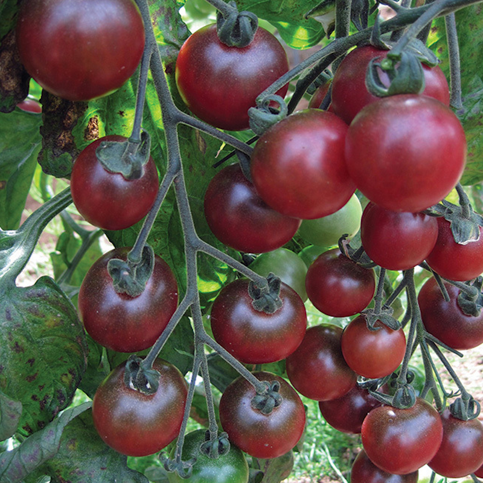
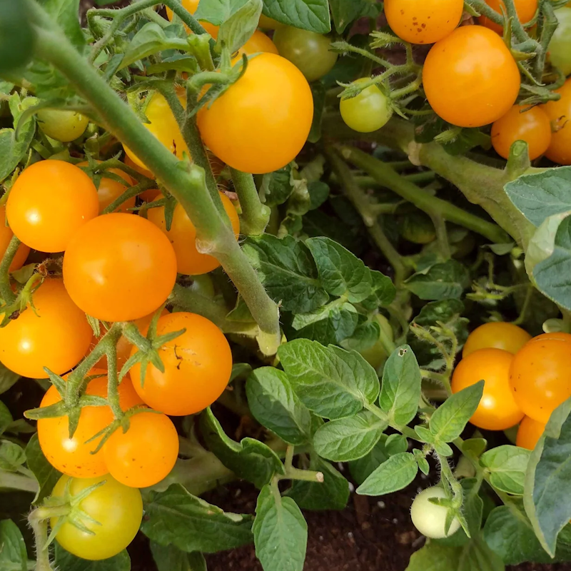

This plant is an F2 generation cross between Rosella Cherry and Orange Hat. The F2 generation comes from seeds saved from the crossed fruit, so this plant may show a wider range of traits than the original parent plants.

One of the two parent tomatoes used in this cross.

One of the two parent tomatoes used in this cross.